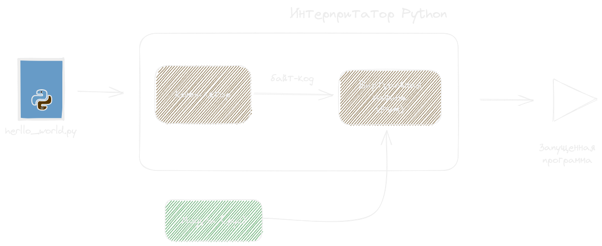
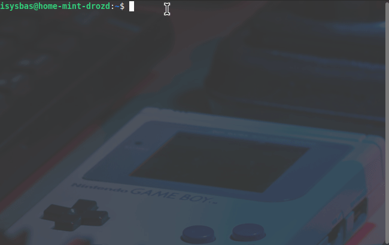
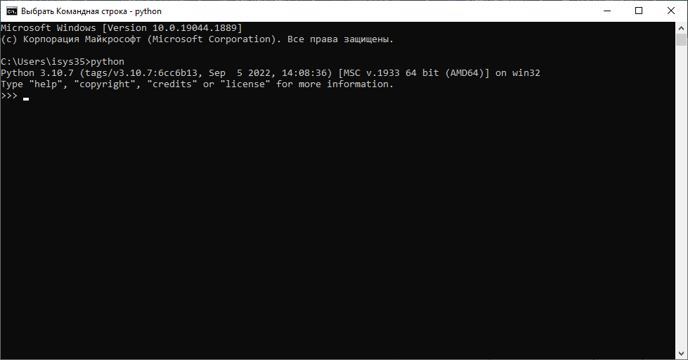

Занятие 1. Введение в Python.
План занятия
Python - интерпретируемый язык программирования со строгой динамической типизацией.
3 основных сферы использования языка:
- Веб-разработка
- Машинное обучение
- Автоматизация процессов
Установка Python (Windows, MacOS)
Официальный сайтУстановка Python (Linux)
sudo apt-get install python3.11REPL (Интерактивная оболочка Python)
IDE (Integrated Development Environment) – это среда разработки, которая используется разработчиками для создания различного программного обеспечения.
Популярные IDE для Python:
- PyCharm

- Visual Studio Code

- Sublime Text

pip (Package Installer for Python)- система управления пакетами, которая используется для установки и управления программными пакетами, написанными на Python.
pip install requests # установка пакета
pip list # список пакетов
pip uninstall requests # удаление пакета
Интерактивная оболочка Python (Python Shell).
Виртуальное окружение в Python — способ изолировать зависимости (пакеты) для определённого проекта.
Создание виртуального окружения с помощью venv
mkdir lesson1
cd project
python -m venv venv
venv\Scripts\activate.bat
Создаём папку
Переходим в созданную папку
Создайм виртуальное окружение c названием venv
Активация виртуального окружения
Обозначение на скриншоте сверху говорит о том, что виртуальное окружение активировано.
Работа с poetry
Установка:
pip install poetry
Основные комманды:
poetry new poetry-demo # Создание проекта poetry-demo
poetry init # Создание в уже существующем проекте
poetry shell # Активация виртуальной среды
deactivate # Деактивация виртуальной среды
Работа с зависимостями в poetry:
poetry add requests # установка библиотеки
poetry install # для установики зависимостей проекта
poetry update # для обновления версий зависимостей
poetry show # просмотр зависимостей проекта
Создание виртуальных окружений с помощью PyCharm

Стили наименований
Функции
def function():
pass
def my_function():
pass
Переменные
var = 16
my_variable = "variable"
Классы
class Model:
pass
class MyClass:
pass
Методы
class Model:
def class_method(self):
pass
def method(self, name):
pass
Константы
CONSTANT = 16
MY_CONSTANT = 16
MY_LONG_CONSTANT = "ghfdeqq:432"
Философия python. PEP20
- Красивое лучше, чем уродливое.
- Явное лучше, чем неявное.
- Простое лучше, чем сложное.
- Сложное лучше, чем запутанное.
- Плоское лучше, чем вложенное.
- Разреженное лучше, чем плотное.
- Читаемость имеет значение.
- Особые случаи не настолько особые, чтобы нарушать правила.
- При этом практичность важнее безупречности.
- Ошибки никогда не должны замалчиваться.
- Если они не замалчиваются явно
- Встретив двусмысленность, отбрось искушение угадать.
- Должен существовать один и, желательно, только один очевидный способ сделать это.
- Хотя он поначалу может быть и не очевиден, если вы не голландец [^1].
- Сейчас лучше, чем никогда.
- Хотя никогда зачастую лучше, чем прямо сейчас.
- Если реализацию сложно объяснить — идея плоха.
- Если реализацию легко объяснить — идея, возможно, хороша.
- Пространства имён — отличная штука! Будем делать их больше!